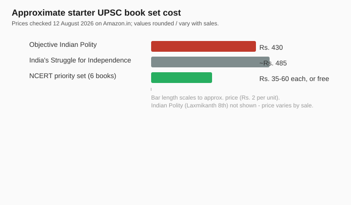

Best Books for UPSC Preparation 2026: The Core You Actually Need
The short version
TL;DR: For UPSC Prelims and Mains preparation in 2026 you do not need a huge library - you need a small, proven core that covers the entire General Studies grid. The books that matter most: M. Laxmikanth's "Indian Polity" (8th Edition Courseware from McGraw Hill - the non-negotiable polity text), his "Objective Indian Polity" (2nd Edition, Rs. 430, for prelims practice), and "India's Struggle for Independence" by Bipan Chandra (paperback around Rs. 485) for modern history. Around those sit the standard NCERTs, which are near-free and freely downloadable. Prices below were checked on Amazon.in on 12 August 2026 and will move with sales.Which books do you really need for UPSC prelims vs mains?
UPSC has a two-stage written exam plus an interview. Prelims is two objective papers: General Studies and CSAT. Mains is nine descriptive papers. The split matters for buying decisions, because books like Laxmikanth serve both stages, while a question-bank like his Objective Indian Polity is meant specifically for Prelims practice.
The core subjects - polity, history, geography, economy, environment, society - use the same base texts for both stages. You only add supplementary notes and current affairs as you move from Prelims to Mains. So a sensible bookshelf is mostly shared, with a few prelims-specific practice books added.
| Book | Author | Edition | Best for | Price (checked 12 Aug 2026) |
|---|---|---|---|---|
| Indian Polity (Courseware) | M. Laxmikanth | 8th | Polity - Prelims + Mains | Varies (typically Rs. 900-1,100) |
| Objective Indian Polity | M. Laxmikanth | 2nd | Polity prelims practice | Rs. 430 |
| India's Struggle for Independence | Bipan Chandra et al. | Anniversary | Modern history foundation | ~Rs. 485 |
| NCERT Social Science set | NCERT | Older editions best | Concept base for 6 subjects | ~Rs. 35-60 each |
Prices and edition info from Amazon.in product pages and publisher listings, checked 12 August 2026. Book prices swing with sales; verify before buying.

Is Laxmikanth's Indian Polity still the best polity book?
Yes, and the 8th Edition (now sold by McGraw Hill as a "Courseware") remains the single most-cited polity text among serious aspirants. It has 95 chapters that walk through the Constitution, working of Parliament, federal system, and every commission and body UPSC asks about. What changed in the 8th edition is the wrapper: it now bundles a full-colour ebook, 40+ concept videos, and solved questions - 13 years of Prelims polity questions (through 2025) and 12 years of Mains polity questions. That turns a static reference into a one-stop polity resource.
Do you need a separate polity question bank?
For Prelims, yes, a good objective book forces the recall that reading alone does not. Laxmikanth's Objective Indian Polity (2nd Edition) is the natural pair. At Rs. 430 it holds 80 chapters, 1,650 questions, and 10 model test papers, arranged chapter-wise so you can test each topic as you finish reading it. The 2024-25 Prelims showed UPSC increasingly mixing static polity with current-events overlays; a chapter-wise bank is how you lock the static part down.
What history book do UPSC aspirants actually use?
For the modern India portion - which is the highest-weight history block in the syllabus - India's Struggle for Independence by Bipan Chandra, Mridula Mukherjee, Aditya Mukherjee, K.N. Panikkar, and Sucheta Mahajan is the standard foundation. It is a proper scholarly narrative rather than a list of dates, and that is exactly what lets you write Mains answers with a sense of historical process. On Amazon.in the paperback lists around Rs. 485 (with a 2% coupon applied) and the ebook was Rs. 245.32 at checking time.
Should you buy the NCERTs or download them free?
NCERT textbooks are the quiet foundation of almost every topper's strategy - and they are the cheapest resource in the whole preparation. Print editions typically cost Rs. 35-60 each, and every title is also freely downloadable from ncert.nic.in, so your effective cost can be zero. The subjects to prioritise are covered by older, pre-2007 NCERT editions, which many coaching materials still reference; the newer ones are thinner and less useful for UPSC depth. You do not need the whole set - focus on History (class 11 and 12), Geography (class 11 and 12), Polity (class 11), Economy (class 11 and 12), Society (class 12) and Environment-related science chapters.
Do you need all of these books at once?
No. Buying the entire syllabus library on day one is a classic mistake. A lean starter set is Laxmikanth's Indian Polity, the Bipan Chandra modern history volume, and the priority NCERTs. Add the Objective Indian Polity once you begin Prelims question practice, usually four to six months before the exam. Adding specialised books for economy, environment, geography, and CSAT is justified only after you have finished this core, because those subjects draw heavily on the same NCERT base and Laxmikanth's structure.
- Indian Polity (Laxmikanth, 8th ed) - the single polity pillar.
- India's Struggle for Independence (Bipan Chandra) - modern history base.
- Priority NCERTs - free, foundation for six subjects.
- Objective Indian Polity - add for Prelims question practice around 4-6 months out.
- Leave specialised subjects (economy, environment, CSAT) until the core is done.
FAQ
Is Laxmikanth enough for UPSC polity?
As a book, yes for the static core. UPSC now weaves current affairs into polity questions, so read Laxmikanth alongside newspapers and a monthly current-affairs digest. The 8th edition's built-in PYQs help you see how static facts get tested.
How much should the core UPSC book set cost?
Bought smart, the starter core can cost under Rs. 1,500 if you download the NCERTs free and buy one Laxmikanth edition used or on sale. Add roughly Rs. 400-500 for Bipan Chandra and a similar figure for the Objective Polity practice book. Prices checked 12 August 2026.
Which NCERTs matter most for UPSC?
The pre-2007 History (class 11-12), Geography (class 11-12), Polity (class 11), and Economy (class 11-12) NCERTs carry the most weight. The newer NCERTs are lighter and less aligned to UPSC depth - most aspirants seek the older editions.
Bipan Chandra or Spectrum for modern history?
Bipan Chandra gives you conceptual depth for Mains. Spectrum is concise for fast Prelims revision. The common approach is Bipan Chandra as the base read and a concise modern-history text for last-minute recall.
Is the 8th edition Laxmikanth worth the upgrade?
If you are buying your first copy, get the 8th - the ebook and solved PYQs add real value for Prelims 2026. If you already own the 7th, upgrading is optional; the core constitutional content barely changed, and you can source recent questions separately.